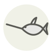

Swordfish
Espadon
| Latin name | Xiphias gladius |
|---|---|
| Family | Fish & seafood |
| Origin | Strait of Messina & warm oceans |
| Season (France) | June – September |
| Flavour | Meaty · Mild · Rich · Marine |
| Typical price (France) | 25–40 €/kg |
What it is
Behind its eyes sits a mass of modified muscle that burns fuel purely as a heater, holding eyes and brain up to fifteen degrees above the cold water it hunts in; those cells carry a higher density of mitochondria than any other known animal cell. The bill is not a spear but a blade — it slashes sideways through a shoal and turns back for whatever it stunned.
In the kitchen
The flesh is dense and low in moisture and there is no fat to buy you time: sear it hard and pull it at 50–52 °C, still pink at the centre. If it must be cooked through, brine it twenty minutes in 5 % salt water first — nothing else keeps a well-done steak from going to rope.
Goes with
Olive oil Lemon Capers Oregano Tomato Mint Pine nut
In season alongside
Allis shad European conger Albacore Bonito (katsuo) Grey mullet Mackerel
Something wrong here, or missing? Tell us